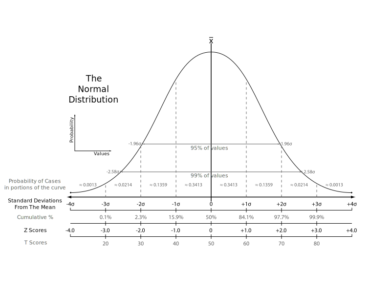
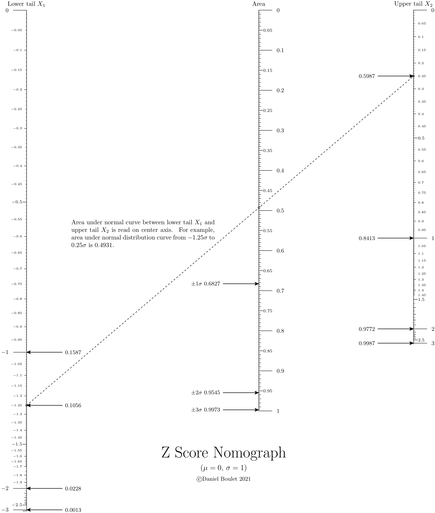

Z Score¶
Theory and background¶
This example extends Pynomo’s versatility by using external libraries.
Python’s scipy library is the engine behind this nomograph
which calculates the area under a normal distribution curve between
two Z scores (one negative, the other positive).
To calculate the area between two Z scores (\(Z_{upper}\), \(Z_{lower}\)) of a normal distribution one must compute the difference between the respective probability density functions \(\mathrm{PDF}(Z_{upper})\) and \(\mathrm{PDF}(Z_{lower})\). [wik07]
Recall that the functional relatinship for a Type 1 block is:
\(F1(u_1)+F2(u_2)+F3(u_3)=0\)
and
\(\mathrm{Area} = \mathrm{PDF}(Z_{upper}) - \mathrm{PDF}(Z_{lower})\)
therefore
\(\mathrm{PDF}(Z_{upper}) - Area - \mathrm{PDF}(Z_{lower})=0\).
Two Type 8 axes are aligned with \(\mathrm{PDF}(Z_{upper})\) and \(\mathrm{PDF}(Z_{lower})\) to align a Z score with its associated PDF.
Generated nomograph¶
Source code¶
1"""
2 ex_zscore.py
3
4 Nomograph to calculate area under normal curve from z-score.
5"""
6
7import scipy.stats as stats
8from pynomo.nomographer import *
9import sys
10
11sys.path.insert(0, "..")
12# allows use of latex commands in PyX such as \frac{a}{b} and \par
13from pyx import *
14
15pyx.text.set(text.LatexEngine)
16
17
18def cdf(u):
19 return stats.norm.cdf(u)
20
21
22def ppf(u):
23 return stats.norm.ppf(u)
24
25
26lmin = 0.0001
27lmax = 0.9999
28
29sd1 = cdf(1.0) - cdf(-1.0)
30sd2 = cdf(2.0) - cdf(-2.0)
31sd3 = cdf(3.0) - cdf(-3.0)
32
33
34leftpdf = {
35 "tag": "a",
36 "u_min": lmin,
37 "u_max": 0.5,
38 "function": lambda u: (u),
39 "scale_type": "manual point",
40 # extra parameters
41 "extra_params": [
42 {
43 "scale_type": "manual arrow",
44 "manual_axis_data": {
45 cdf(-1.0): r"%4.4f" % cdf(-1.0),
46 cdf(-2.0): r"%4.4f" % cdf(-2.0),
47 cdf(-3.0): r"%4.4f" % cdf(-3.0),
48 cdf(-1.25): r"%4.4f" % cdf(-1.25),
49 },
50 "arrow_length": 2.0,
51 },
52 ],
53}
54
55
56leftz = {
57 "tag": "a",
58 "u_min": ppf(lmin),
59 "u_max": ppf(0.5),
60 "function": lambda u: cdf(u),
61 "align_func": lambda u: cdf(u),
62 "title": "Lower tail $X_1$",
63 "tick_levels": 5,
64 "tick_text_levels": 4,
65 "scale_type": "linear smart",
66 "tick_side": "left",
67}
68
69
70rightpdf = {
71 "tag": "c",
72 "u_min": 0.5,
73 "u_max": lmax,
74 "function": lambda u: -(u),
75 "scale_type": "manual point",
76 # extra parameters
77 "extra_params": [
78 {
79 "scale_type": "manual arrow",
80 "tick_side": "left",
81 "manual_axis_data": {
82 cdf(3.0): r"%4.4f" % cdf(3.0),
83 cdf(2.0): r"%4.4f" % cdf(2.0),
84 cdf(1.0): r"%4.4f" % cdf(1.0),
85 cdf(0.25): r"%4.4f" % cdf(0.25),
86 },
87 "arrow_length": 2.0,
88 },
89 ],
90}
91
92
93rightz = {
94 "tag": "c",
95 "u_min": ppf(0.5),
96 "u_max": ppf(lmax),
97 "function": lambda u: cdf(u),
98 "align_func": lambda u: cdf(u),
99 "title": "Upper tail $X_2$",
100 "tick_levels": 5,
101 "tick_text_levels": 4,
102 "scale_type": "linear smart",
103}
104
105leftblock2 = {"block_type": "type_8", "f_params": leftz, "isopleth_values": [["x"]]}
106
107
108rightblock2 = {"block_type": "type_8", "f_params": rightz, "isopleth_values": [["x"]]}
109
110
111delta = {
112 "u_min": 0.0,
113 "u_max": 1.0,
114 "function": lambda u: u,
115 "scale_type": "linear smart",
116 "title": "Area",
117 "tick_levels": 5,
118 "tick_text_levels": 4,
119 "extra_params": [
120 {
121 "tick_side": "left",
122 "scale_type": "manual arrow",
123 "manual_axis_data": {
124 sd1: r"$\pm 1 \sigma$ %4.4f" % sd1,
125 sd2: r"$\pm 2 \sigma$ %4.4f" % sd2,
126 sd3: r"$\pm 3 \sigma$ %4.4f" % sd3,
127 },
128 "arrow_length": 2.0,
129 },
130 ],
131}
132
133block_diff = {
134 "block_type": "type_1",
135 "f1_params": leftpdf,
136 "f2_params": delta,
137 "f3_params": rightpdf,
138 "proportion": 1.5,
139 "isopleth_values": [[cdf(-1.25), "x", cdf(0.25)]],
140}
141
142
143main_params = {
144 "filename": "ex_zscore.pdf",
145 "paper_height": 11.0 * 2.54,
146 "paper_width": 8.5 * 2.54,
147 "block_params": [block_diff, leftblock2, rightblock2],
148 "cdfations": [("rotate", 0.01), ("scale paper",), ("polygon",)],
149 "title_x": 11.0,
150 "title_y": 3.0,
151 "title_box_width": 15.0,
152 "title_str": r"\Huge Z Score Nomograph \par \medskip \large ($\mu = 0$, $\sigma = 1$) \par \medskip \small \copyright Daniel Boulet 2021",
153 # 'make_grid':True,
154 "extra_texts": [
155 {
156 "x": 2.5,
157 "y": 16.0,
158 "text": r"\noindent Area under normal curve between lower tail $X_1$ and upper tail $X_2$ is read on center axis. \
159 For example, area under normal distribution curve from $%g \sigma$ to $%g \sigma$ is $%4.4f$."
160 % (-1.25, 0.25, cdf(0.25) - cdf(-1.25)),
161 "width": 8.0,
162 },
163 ],
164}
165
166Nomographer(main_params)